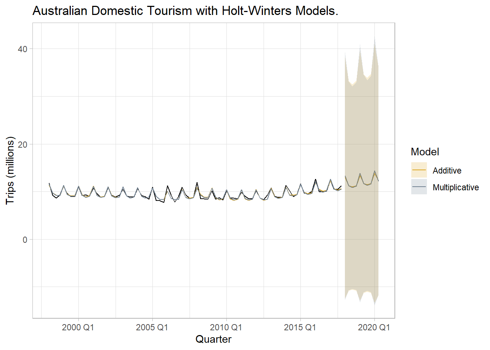
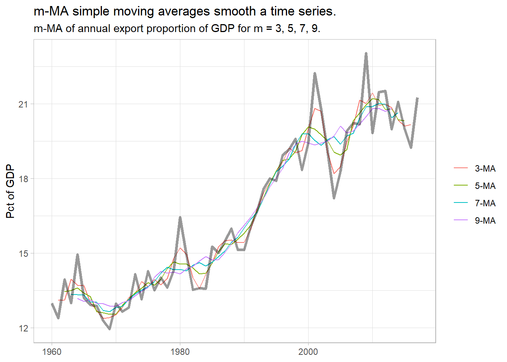

Chapter 4 Exponential Smoothing (ETS)
Exponential smoothing methods are weighted averages of past observations, with the weights decaying exponentially as the observations get more remote. Exponential smoothing is a family of methods that vary by their trend and seasonal components.
Seasonal Component | |||
|---|---|---|---|
Trend Component | None (N) | Additive (A) | Multiplicative (M) |
None (N) | (N, N) | (N, A) | (N, M) |
Additive (A) | (A, N) | (A, A) | (A, M) |
Additive Damped (Ad) | (Ad, N) | (Ad, A) | (Ad, M) |
There can be no trend (N), an additive (A) linear trend from the forecast horizon, or a damped additive (Ad) trend leveling off from the forecast horizon.1
There can be no seasonality (N), or it can be additive (A) or multiplicative (M).
The trend and seasonal combinations produce 3 x 3 = 9 possible exponential smoothing methods. ETS (Error, Trend, and Seasonality) models double the number of possible state space models to 18 by treating the error variances as either additive (A) or multiplicative (M). ETS models do not just extend the exponential smoothing models; they also estimate their parameters differently, using maximum likelihood estimation. For models with additive errors, this is equivalent to minimizing the sum of squared errors (SSE). The great advantage of using ETS models is that you can optimize the parameter settings by minimizing the Akaike Information Criterion (AICc).
fable::ETS() fits ETS models:
4.1 Simple Exponential Smoothing (SES)
Simple exponential smoothing models have no seasonal or trend components. Simple exponential smoothing models are of the form \(\hat{y}_{T+h|T} = \alpha(1-\alpha)^0 y_{T-0} + \alpha(1-\alpha)^1y_{T-1} + \alpha(1-\alpha)^2y_{T-2} \dots\) where \(0 < \alpha < 1\) is a weighting parameter. On the one extreme, \(\alpha\) = 1 is the same as a naive model. On the other extreme \(\alpha \approx\) 0 is the average model.
ETS models are commonly expressed in component form as a recursive model. The component form of SES is
\[ \begin{align} \hat{y}_{t+h|t} &= l_t \\ l_t &= \alpha y_t + (1 - \alpha)l_{t-1} \end{align} \]
The first component, \(\hat{y}_{t+h|t}\), is the forecast. It equals the last value of the estimated level, kind of like a y-intercept. The second component, \(l_t\) is the level (or smoothed value) of the series at time \(t\). It describes how the level changes over time, kind of like a slope. ETS uses nonlinear optimization to estimate two parameters for SES, \(\alpha\) and \(l_0\).
Example
Data set tsibbledata::global_economy contains annual country-level economic indicators, including Exports. This time series has no trend or seasonality, so it is a good candidate for an SES model.
tsibbledata::global_economy %>%
filter(Country == "Algeria") %>%
ggplot(aes(x = Year, y = Exports)) +
geom_line() +
labs(title = "Algerian Exports (% of GDP)")fable::ETS() is the exponential smoothing function. With additive errors, this is an ETS(A, N, N) model.
ses_fit <- tsibbledata::global_economy %>%
filter(Country == "Algeria") %>%
model(ETS(Exports ~ error("A") + trend("N") + season("N")))
ses_fit %>% report()## Series: Exports
## Model: ETS(A,N,N)
## Smoothing parameters:
## alpha = 0.8399875
##
## Initial states:
## l[0]
## 39.539
##
## sigma^2: 35.6301
##
## AIC AICc BIC
## 446.7154 447.1599 452.8968The fit estimates \(\hat{l}_0\) = 39.539 percent of GDP are exports at period 0 (1960), and \(\hat{\alpha}\) = 0.840, a high weight on the prior value. Check the model assumptions with residuals plots.
Residual heteroscedasticity compromises prediction intervals. The innovation residuals vs time plot does not show heteroscedasticity.2 It does show a potential outlier around 1962 which might be a concern. Autocorrelation increases prediction intervals. The autocorrelation function plot shows a barely significant negative spike at lag 12 years. Non-normal residuals also compromise prediction intervals. The residual distribution in the histogram is slightly left-skewed.
Use the fitted model to forecast the response variable for five periods.
ses_fc <- ses_fit %>%
forecast(h = 5) %>%
hilo(80) %>%
mutate(
lpi = map_dbl(`80%`, ~.$lower),
upi = map_dbl(`80%`, ~.$upper)
)
ses_fit %>%
augment() %>%
ggplot(aes(x = Year)) +
geom_line(aes(y = Exports)) +
geom_line(aes(y = .fitted), color = "goldenrod") +
geom_line(data = ses_fc, aes(y = .mean), color = "goldenrod") +
geom_ribbon(data = ses_fc, aes(ymin = lpi, ymax = upi), alpha = 0.2, fill = "goldenrod") +
labs(title = "Simple Exponential Smoothing, ETS(A, N, N)")4.2 Holt Linear
Holt’s linear method extends SES with a trend component, \(b_t\).
\[ \begin{align} \hat{y}_{t+h|t} &= l_t + hb_t \\ l_t &= \alpha y_t + (1 - \alpha)(l_{t-1} + hb_{t-1}) \\ b_t &= \beta^*(l_t - l_{t-1}) + (1 - \beta^*)b_{t-1} \end{align} \]
The level equation, \(l_t\) is the same except for a trend adjustment. The trend equation, \(b_t\), describes how the slope changes over time. The parameter \(\beta^*\) describes how quickly the slope can change. Now there are four parameter to estimate, \(\alpha\), \(l_0\), \(\beta^*\), and \(b_0\).
Example
Data set tsibbledata::global_economy contains annual country-level economic indicators, including Population size. This time series has a trend, so it is a good candidate for Holt’s linear trend method.
tsibbledata::global_economy %>%
filter(Country == "Australia") %>%
ggplot(aes(x = Year, y = Population)) +
geom_line() +
labs(title = "Australian Population.")
Fit the model with ETS() again, but this time specify an additive trend, ETS(A, A, N).
holt_fit <- tsibbledata::global_economy %>%
filter(Country == "Australia") %>%
model(ETS(Population ~ error("A") + trend("A") + season("N")))
holt_fit %>% report()## Series: Population
## Model: ETS(A,A,N)
## Smoothing parameters:
## alpha = 0.9998992
## beta = 0.3257153
##
## Initial states:
## l[0] b[0]
## 10067191 228012.5
##
## sigma^2: 4139605871
##
## AIC AICc BIC
## 1525.705 1526.859 1536.008ETS() estimates an \(\hat{l}_0\) of 10,067,191 people at period 0 (1960) with a very high weighting on recent values \(\hat{\alpha}\) of 0.9999. \(\alpha\) is high when the trend increases rapidly. \(\beta_0\) is 228,013 with a \(\hat{\beta}\) of 0.326. This is a fairly large \(\hat{\beta}\), meaning the trend changes often.
Check the model assumptions with residuals plots. No heteroscedasticity in the residuals vs time plot and no skew in the residual distribution plot, so the prediction intervals are reliable. The autocorrelation plot has no significant spikes, so the prediction intervals will not be unduly large.
Use the fitted model to forecast the response variable for ten periods.
holt_fc <- holt_fit %>%
forecast(h = 10) %>%
hilo(80) %>%
mutate(
lpi = map_dbl(`80%`, ~.$lower),
upi = map_dbl(`80%`, ~.$upper)
)
holt_fit %>%
augment() %>%
ggplot(aes(x = Year)) +
geom_line(aes(y = Population)) +
geom_line(aes(y = .fitted), color = "goldenrod") +
geom_line(data = holt_fc, aes(y = .mean), color = "goldenrod") +
geom_ribbon(data = holt_fc, aes(ymin = lpi, ymax = upi), alpha = 0.2, fill = "goldenrod") +
labs(title = "Holt's Linear Method, ETS(A, A, N)")
4.3 Additive Damped Trend
Holt’s linear trend produces a sloped, but straight line. Research shows that constant trends tend to overshoot. The additive damped trend model introduces a damping parameter, \(\phi\), to reduce the forecasted trend to a flat line over time. The forecast equation replaces \(h\) with the series \(\phi^1 + \phi^2 + \cdots + \phi^h\). The trend equation adds \(\phi\) as a multiplier to the second term.
\[ \begin{align} \hat{y}_{t+h|t} &= l_t + (\phi^1 + \phi^2 + \cdots + \phi^h)b_t \\ l_t &= \alpha y_t + (1 - \alpha)(l_{t-1} + \phi b_{t-1}) \\ b_t &= \beta^*(l_t - l_{t-1}) + (1 - \beta^*) \phi b_{t-1} \end{align} \]
Now there are five parameters to estimate, \(\alpha\), \(\beta^*\), \(l_0\), \(b_0\), and \(\phi\) (although you can supply a \(\phi\) value to the trend() equation. Expect \(\phi\) to between .8 and .998.
Example
Return to the Australian population data. You can fit the original model and the additive damped trend model in a single statement. The new model is an ETS(A, Ad, N).
dholt_fit <- tsibbledata::global_economy %>%
filter(Country == "Australia") %>%
model(
`Holt's Linear` = ETS(Population ~ error("A") + trend("A") + season("N")),
`Damped Holt's Linear` = ETS(Population ~ error("A") + trend("Ad") + season("N"))
)
dholt_fit %>% select(`Damped Holt's Linear`) %>% report()## Series: Population
## Model: ETS(A,Ad,N)
## Smoothing parameters:
## alpha = 0.9998988
## beta = 0.4392868
## phi = 0.98
##
## Initial states:
## l[0] b[0]
## 10067191 277729.2
##
## sigma^2: 4584582964
##
## AIC AICc BIC
## 1532.543 1534.190 1544.906ETS() estimates \(\hat{\phi}\) = 0.980 - just a small amount of damping.
dholt_fc <- dholt_fit %>%
forecast(h = 10) %>%
hilo(80) %>%
mutate(
lpi = map_dbl(`80%`, ~.$lower),
upi = map_dbl(`80%`, ~.$upper)
)
palette_dholt <- c(`Holt's Linear` = "goldenrod", `Damped Holt's Linear` = "seagreen")
dholt_fit %>%
augment() %>%
ggplot(aes(x = Year)) +
geom_line(aes(y = Population)) +
geom_line(aes(y = .fitted, color = .model)) +
geom_line(data = dholt_fc, aes(y = .mean, color = .model)) +
geom_ribbon(data = dholt_fc, aes(ymin = lpi, ymax = upi, color = .model, fill = .model),
alpha = 0.2) +
scale_fill_manual(values = palette_dholt) +
scale_color_manual(values = palette_dholt) +
theme(legend.position = "top") +
labs(color = NULL, fill = NULL,
title = "Holt's Linear Method, ETS(A, A, N), and Additive Damped, ETS(A, Ad, N)")4.4 Holt-Winters
The Holt-Winters method extends Holt’s method with a seasonality component, \(s_t\), for \(m\) seasons per period. There are two versions of this model, the additive and the multiplicative. The additive method assumes the error variance is constant, and the seasonal component sums to approximately zero over the course of the year. The multiplicative version assumes the error variance scales with the level, and the seasonal component sums to approximately \(m\) over the course of the year.
4.4.1 Additive Holt-Winters
The additive method introduces the seasonality component as an additive element.
\[ \begin{align} \hat{y}_{t+h|t} &= l_t + hb_t + s_{t+h-m(k+1)} \\ l_t &= \alpha(y_t - s_{t-m}) + (1 - \alpha)(l_{t-1} + b_{t-1}) \\ b_t &= \beta^*(l_t - l_{t-1}) + (1 - \beta^*)b_{t-1} \\ s_t &= \gamma(y_t - l_{t-1} - b_{t-1}) + (1 - \gamma)s_{t-m} \end{align} \]
\(k\) is the modulus of \((h - 1) / m\), so \(s_{t+h-m(k+1)}\) is always based on the prior seasonal period. \(l_t\) is a weighted average (\(alpha\) weighting) between the seasonally adjusted observation and the non-seasonal forecast. The trend component is unchanged. The seasonal component is a weighted average (\(\gamma\) weighting) between the current seasonal index and the same season of the prior season period.
Now there are five smoothing parameters to estimate: \(\alpha\), \(l_0\), \(\beta^*\), \(b_0\), and \(\gamma\), plus an initial value for each season of the seasonal period.
4.4.2 Multiplicative Holt-Winters
In the multiplicative version, the seasonality averages to one. Use the multiplicative method if the seasonal variation increases with the level.
\[ \begin{align} \hat{y}_{t+h|t} &= (l_t + hb_t) s_{t+h-m(k+1)} \\ l_t &= \alpha\frac{y_t}{s_{t-m}} + (1 - \alpha)(l_{t-1} + b_{t-1}) \\ b_t &= \beta^*(l_t - l_{t-1}) + (1-\beta*)b_{t-1} \\ s_t &= \gamma\frac{y_t}{(l_{t-1} - b_{t-1})} + (1 - \gamma)s_{t-m} \\ \end{align} \]
Example
Data set tsibble::tourism contains quarterly domestic tourist visit-nights in Australia. The plot below is extended with forecasts using the Holt-Winters additive method and the Holt-Winters seasonal method. It’s not obvious whether the error variance increases with the series level, so either the additive or the multiplicative method may be appropriate. The RMSE from the multiplicative model
tour <- tsibble::tourism %>%
filter(Purpose == "Holiday") %>%
summarize(Trips = sum(Trips) / 1000)
tour_fit <- tour %>%
model(
Additive = ETS(Trips ~ error("A") + trend("A") + season("A")),
Multiplicative = ETS(Trips ~ error("M") + trend("A") + season("M"))
)
tour_fit %>% report()## Warning in report.mdl_df(.): Model reporting is only supported for individual
## models, so a glance will be shown. To see the report for a specific model, use
## `select()` and `filter()` to identify a single model.## # A tibble: 2 × 9
## .model sigma2 log_lik AIC AICc BIC MSE AMSE MAE
## <chr> <dbl> <dbl> <dbl> <dbl> <dbl> <dbl> <dbl> <dbl>
## 1 Additive 0.193 -105. 229. 231. 250. 0.174 0.184 0.321
## 2 Multiplicative 0.00212 -104. 227. 229. 248. 0.170 0.183 0.0328tour_fit_fc <- tour_fit %>%
forecast(h = 10) %>%
mutate(sigma = map_dbl(Trips, ~unlist(.) %>% .["mu"]),
ci_025 = qnorm(.025, .mean, sigma),
ci_975 = qnorm(.975, .mean, sigma))
tour_fit_aug <- tour_fit %>%
augment()
tour_fit_aug %>%
# filter(.model == "Additive") %>%
ggplot(aes(x = Quarter)) +
geom_line(aes(y = Trips)) +
geom_line(aes(y = .fitted, color = .model)) +
geom_line(data = tour_fit_fc, aes(y = .mean, color = .model)) +
geom_ribbon(data = tour_fit_fc,
aes(ymin = ci_025, ymax = ci_975, fill = .model),
alpha = 0.2) +
scale_color_manual(values = c("Additive" = "goldenrod", "Multiplicative" = "slategray")) +
scale_fill_manual(values = c("Additive" = "goldenrod", "Multiplicative" = "slategray")) +
theme_light() +
labs(title = "Australian Domestic Tourism with Holt-Winters Models.",
y = "Trips (millions)", fill = "Model", color = "Model")## Warning: The output of `fortify(<fable>)` has changed to better suit usage with the ggdist package.
## If you're using it to extract intervals, consider using `hilo()` to compute intervals, and `unpack_hilo()` to obtain values.
## The output of `fortify(<fable>)` has changed to better suit usage with the ggdist package.
## If you're using it to extract intervals, consider using `hilo()` to compute intervals, and `unpack_hilo()` to obtain values.
Notice below that the additive seasonal component estimates (s[0] to s[-3]) sum to approximately zero.
## Series: Trips
## Model: ETS(A,A,A)
## Smoothing parameters:
## alpha = 0.2620382
## beta = 0.04314266
## gamma = 0.0001000312
##
## Initial states:
## l[0] b[0] s[0] s[-1] s[-2] s[-3]
## 9.791341 0.02106875 -0.534408 -0.6697662 -0.2937802 1.497954
##
## sigma^2: 0.1931
##
## AIC AICc BIC
## 228.5676 231.1390 250.0058And the multiplicative seasonal component estimates (s[0] to s[-3]) sum to approximately 4 - the number of seasons in the seasonal period.
## Series: Trips
## Model: ETS(M,A,M)
## Smoothing parameters:
## alpha = 0.2236926
## beta = 0.03042124
## gamma = 0.0001000009
##
## Initial states:
## l[0] b[0] s[0] s[-1] s[-2] s[-3]
## 10.01351 -0.01141645 0.9430572 0.9270043 0.9692079 1.160731
##
## sigma^2: 0.0021
##
## AIC AICc BIC
## 226.7196 229.2910 248.1578Check the model assumptions with checkresiduals. The residuals plot shows some long-term autocorrelation (a long hump), and the variance increases in the latter years. The histogram shows a normal distribution. The autocorrelation function (ACF) plot shows many spikes outside the insignificance band, and the Ljung-Box test rejects the null hypothesis of no autocorrelation of the residuals (p < 0.0001).
Here is a four-week Holt-Winters forecast of the hyndsight dataset of daily pageviews on the Hyndsight blog for one year starting April 30, 2014. Create a training dataset consisting of all obserations minus the last four weeks. Then forecast those four weeks with Holt-Winters. Use the additive method because the variance is not scaling with page volume. Creae a second forecast with the seasonal naive method as a benchmark.
Notice that the Ljung-Box test rejects the null hypothesis of no autocorrelation of the residuals. The forecast might still provide useful information even with residuals that fail the white noise test.
# hyndsight.train <- subset(hyndsight, end = length(hyndsight) - 4*7)
#
# hyndsight.hw <- hw(hyndsight.train, seasonal = "additive", h = 4*7)
#
# hyndsight.sn <- snaive(hyndsight.train, h = 4*7)
#
# checkresiduals(hyndsight.hw)Compare Holt-Winters to the seasonal naive forecast. The RMSE of Holt-Winters (201.7656) is smaller than the RMSE of seasonal naive (202.7610), so it is the more accurate forecast.
Here finally is a plot of the forecasted page views.
4.5 Model Selection with CV
Let’s compare the performance of a few candidate models for the base R datasets::WWWusage data set of internet usage.
datasets::WWWusage %>%
as_tsibble() %>%
ggplot(aes(x = index, y = value)) +
geom_line() +
theme_light() +
labs(title = "Internet usage by minute", x = NULL, y = "Users")
We will use time-series cross-validation. The data set has 100 rows. Function stretch_tsibble(.init, .step) takes a tsibble and creates a new tsibble for cross validation. First stretch_tsibble() takes the first .init rows from the tsibble and adds a new column .id with value 1. Then it takes the first .init + .step rows from the tsibble and assigns .id value 2. It continues like this, creating longer and longer tsibbles until it cannot create a longer one from the original tsibble. Finally, it appends these together into one long tsibble with .id added to the index. Nofmal cross-validation repeatedly fits a model to data set with one of the rows left out. Since model() fits a separate model per index value, creating this long tsibble effectively accomplishes the same thing. Note the fundamental difference here though: time seris CV does not leave out single values from points along in the time series. It leaves out all points after a particular point along the time series - each sub-data set starts at the beginning and is uninterrupted until reaching the varying end points. Let’s take a look at the CV data set before using it to fit the models.
www_cv <- datasets::WWWusage %>%
as_tsibble() %>%
stretch_tsibble(.init = 10, .step = 1)
# 10 rows + 11 rows + ... + 100 rows = 5,005 rows:
nrow(www_cv)
## [1] 5005
# .id added to index
head(www_cv)
## # A tsibble: 6 x 3 [1]
## # Key: .id [1]
## index value .id
## <dbl> <dbl> <int>
## 1 1 88 1
## 2 2 84 1
## 3 3 85 1
## 4 4 85 1
## 5 5 84 1
## 6 6 85 1
# 91 index values
summary(www_cv$.id)
## Min. 1st Qu. Median Mean 3rd Qu. Max.
## 1.00 42.00 62.00 58.55 78.00 91.00Fit four models to the 91 data sets to compare the accuracy. Here’s the full code.
datasets::WWWusage %>%
as_tsibble() %>%
stretch_tsibble(.init = 10, .step = 1) %>%
model(
OLS = TSLM(value ~ index),
`Simple Exponential Smoothing` = ETS(value ~ error("A") + trend("N") + season("N")),
`Holt's method` = ETS(value ~ error("A") + trend("A") + season("N")),
`Holt's method (damped)` = ETS(value ~ error("A") + trend("Ad") + season("N"))
) %>%
forecast(h = 1) %>%
accuracy(data = as_tsibble(datasets::WWWusage))## Warning: The future dataset is incomplete, incomplete out-of-sample data will be treated as missing.
## 1 observation is missing at 101## # A tibble: 4 × 10
## .model .type ME RMSE MAE MPE MAPE MASE RMSSE ACF1
## <chr> <chr> <dbl> <dbl> <dbl> <dbl> <dbl> <dbl> <dbl> <dbl>
## 1 Holt's method Test 0.0610 3.87 3.17 0.244 2.38 0.701 0.668 0.296
## 2 Holt's method (damp… Test 0.288 3.69 3.00 0.347 2.26 0.663 0.636 0.336
## 3 OLS Test -6.01 38.7 31.4 -10.8 24.8 6.94 6.67 0.974
## 4 Simple Exponential … Test 1.46 6.05 4.81 0.904 3.55 1.06 1.04 0.803The best model as measured by RMSE was Holt’s method with damping. OLS was pretty bad. Let’s fit it to the whole data set and forecast future periods.
www_fit <- datasets::WWWusage %>%
as_tsibble() %>%
model(holt_d = ETS(value ~ error("A") + trend("Ad") + season("N")))
www_fit %>% report()## Series: value
## Model: ETS(A,Ad,N)
## Smoothing parameters:
## alpha = 0.9999
## beta = 0.9966439
## phi = 0.814958
##
## Initial states:
## l[0] b[0]
## 90.35177 -0.01728234
##
## sigma^2: 12.2244
##
## AIC AICc BIC
## 717.7310 718.6342 733.3620This time the damping parameter is very small (0.815), resulting in a quick return to the horizontal.
www_fc <- www_fit %>%
forecast(h = 10) %>%
mutate(sigma = map_dbl(value, ~unlist(.) %>% .["mu"]),
ci_025 = qnorm(.025, .mean, sigma),
ci_975 = qnorm(.975, .mean, sigma))
www_fit %>%
augment() %>%
ggplot(aes(x = index)) +
geom_line(aes(y = value)) +
geom_line(aes(y = .fitted), color = "goldenrod") +
geom_line(data = www_fc, aes(y = .mean), color = "goldenrod") +
geom_ribbon(data = www_fc, aes(ymin = ci_025, ymax = ci_975), alpha = 0.2, fill = "goldenrod") +
theme_light() +
labs(title = "Internet usage by Minute.",
subtitle = "Holt's method with damping. Shaded are is 95% prediction interval.",
x = NULL)## Warning: The output of `fortify(<fable>)` has changed to better suit usage with the ggdist package.
## If you're using it to extract intervals, consider using `hilo()` to compute intervals, and `unpack_hilo()` to obtain values.
## The output of `fortify(<fable>)` has changed to better suit usage with the ggdist package.
## If you're using it to extract intervals, consider using `hilo()` to compute intervals, and `unpack_hilo()` to obtain values.
4.6 Model Selection via Maximum Likelihood
If you specify an ETS model with no parameters, it will use maximum likelihood to select the model with the minimum AICc. Try it with the internet usage data set.
## Series: value
## Model: ETS(A,Ad,N)
## Smoothing parameters:
## alpha = 0.9999
## beta = 0.9966439
## phi = 0.814958
##
## Initial states:
## l[0] b[0]
## 90.35177 -0.01728234
##
## sigma^2: 12.2244
##
## AIC AICc BIC
## 717.7310 718.6342 733.3620ETS chose an additive damped trend model, the same as we found using cross validation.